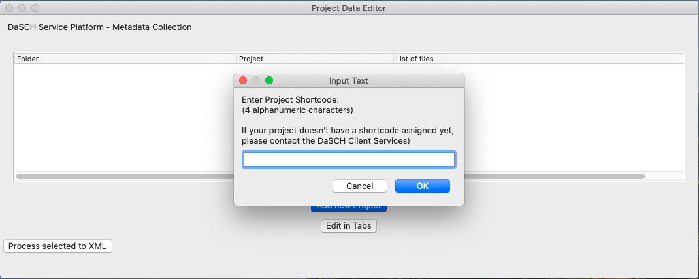

Before you start

Before you start with collecting data to your project in the DSP-metadata-tool make sure you have the alphanumeric shortcode of your project. You get the shortcode of your project from the DaSCH Client Services. The shortcode cannot be changed afterwards, so we prevent you from starting without a shortcode. Be sure you have the correct shortcode. Ask the DaSCH Client Services before entering to get the alphanumeric shortcode provided for your project.
Tabbed view